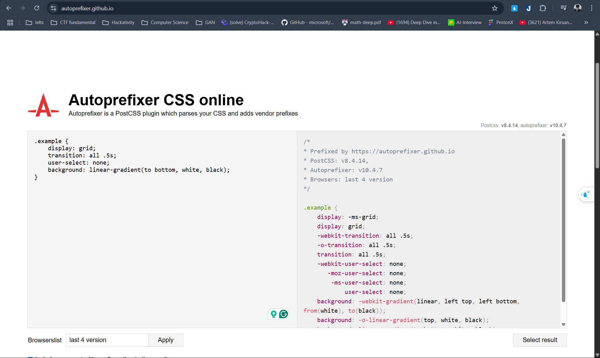

CSS prefixes are used to enable experimental features in web browsers. They allow developers to use new CSS properties and values before they are fully standardized.
.example {
-webkit-transform: rotate(45deg); /* Chrome, Safari */
-moz-transform: rotate(45deg); /* Firefox */
-ms-transform: rotate(45deg); /* IE */
-o-transform: rotate(45deg); /* Opera */
transform: rotate(45deg); /* Standard */
}
There is a website that help you deal with prefix faster. Visit auto-prefix
The website should look like this:
You can check if a CSS property is supported by a specific browser using the Can I use website.
For example, to check if the user-select property is
supported, you can visit the link above. The results will show you the
support status across different browsers and versions.